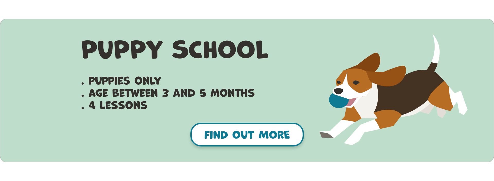
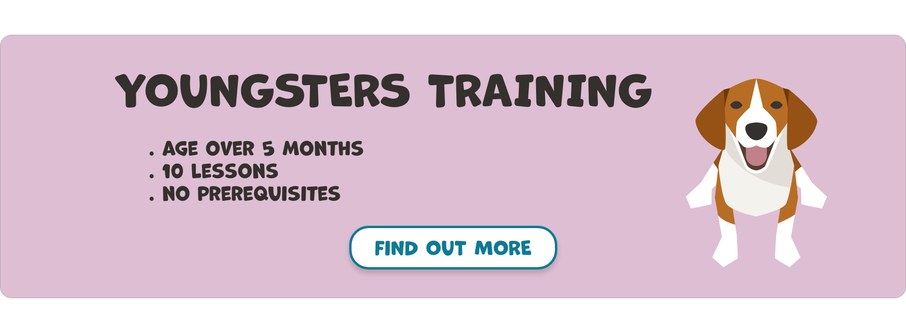
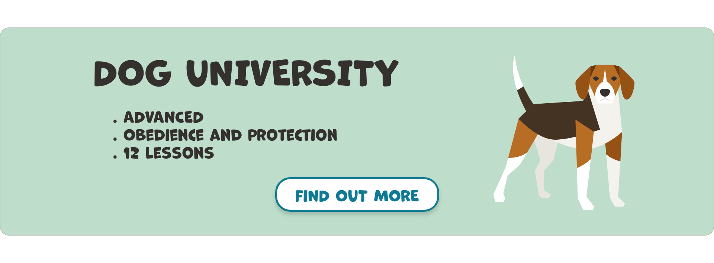
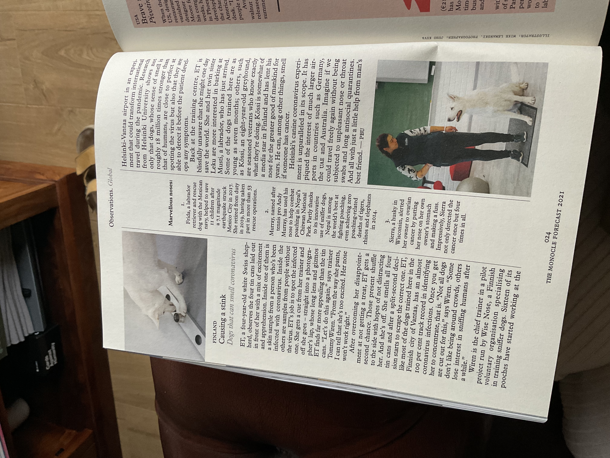
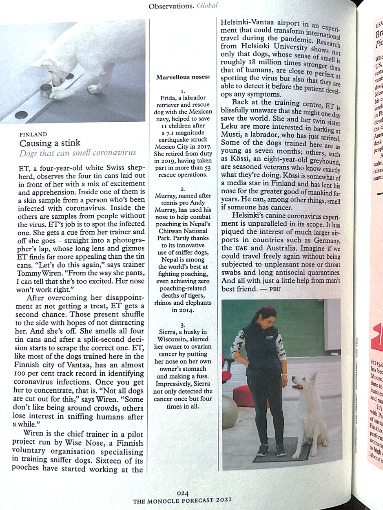
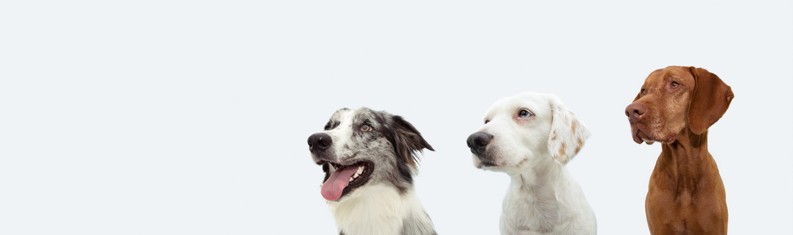

Visual Design Portfolio ©2021 Michaela Markova
Mockups
Introduction
This website idea was born of my desire to own a dog. I am planning to get a puppy in the future and train him with the help of a dog trainer. The website is about a dog training field in London that offers professional training and socialising to dogs of all ages. This theme connects all my visuals, and I used all the images, including the gif banner on the website. For this project, I have only created and included desktop size mockups. I used Adobe Xd software to design the mockups. I firstly made a 1920px wide artboard then added all my images. I wanted to evoke playfulness when choosing the fonts. I tried to keep the colour scheme of the design simple while still having a colourful design. The green and pink are complementary colours that combine with the neutral grey and beige to form the desired colour theme.
Mockup #1
Description
Mockup #1 is the mockup of the website landing page. It contains a company logo, header with a navigation bar, a gif banner inviting to an event, news from dog world and a footer. I also included the courses part and a map locating the school. Users can find both of those on their separate pages; however, I wanted to make accessing the information easier for the users by adding the essential segments on the home page.

Mockup #2
Description
Mockup #2 is the mockup of the courses page where users can find more information on the different courses Dog Academy offers to clients.

Mockup #3
Description
Mockup #3 shows the about us page, which consists of contact details, opening times, the school’s photo gallery and location.

Images
Introduction
I used Shutterstock to download the photos for my project. There are links to the original images. I also worked with a dog illustration board with which I downloaded from Shutterstock. The individual dogs from the illustration were used throughout my project. There is a link to the original artwork below. Also, most of the downloaded photos were very large, and their size would need to be optimised for use on the web.
Original Illustration
Image #1
Description
I wanted to create a simple text logo with a dog illustration. I used Adobe Illustrator on my iPad to draw a one-line dog which I learnt a few years ago. Then, I chose a font that went well together with the drawing, placed the dog above the text and grouped the two elements. Finally, I exported the logo as responsive SVG to ensure scalability and high image quality at any resolution.
*the font might not be available in Safari, but should be well displayed in Chrome
Image #2
Description
I created the course slips in Adobe Xd. I started by generating three rectangles of the same size, curved the edges and fill them with green and pink background colours. I then copied and pasted the dog's illustrations and created text areas choosing Marvin Round font. I then designed a button with round edges and green colour that I picked from the dog's ball. In the end, I grouped all the elements in each slip into a single component and exported the file as a JPEG image. I placed the three slides next to each other on the website, but I wanted to ensure they could be moved around individually.
Original Illustration
Final Images
  Image #3
Description
I manipulated the colour and lighting of this image in Adobe Lightroom. I targeted the green colour of the background with the target adjustment tool and reduced the hue. I also adjusted the highlights and shadows of the whole photo. I wanted to achieve more colour and contrast balanced picture.
Original Image

Final Image

Image #4
Description
I used Adobe Lightroom to edit this photo. First, I flipped the image horizontally to create a space for text on the left-hand side. Next, I changed the colour profile to monochrome – black and white because I intended to use the image as a background. The original image could have obtained too much users attention, and I wanted the focus to be on the text in front. I then adjusted the light by balancing highlights and shadows. I darkened the highlights and brought up the shadows, making the dog stand out more and appear more apparent. The original image was in JPEG format, and I also exported the image in JPEG, which is great for web use.
Original Image

Final Image

Image #5
Description
I used Adobe Illustrator to produce this image. I first created a rectangle filled with grey and curved its edges to achieve the final form. I then copied a dog from the Shutterstock illustration, pasted it in the middle of the rectangle and resized it. Next, I downloaded a Shutterstock icons illustration which design I believed would suit the Dog Academy project. Then, I copied and pasted icons that resemble social media and spread them around the dog image. Finally, I grouped all the elements and saved the file as SVG.
Original Illustration - Dog
Original Illustration - Icons
Final Image

Image #6
Description
I took a photo of this Monocle magazine article with my iPad and opened it in Adobe Lightroom. First, I cropped the shot and adjusted it according to the horizontal line. Then, I manipulated the colour, changed lights and shadows and added contrast.
Original Image
Final Image
Image #7
Description
I used this image as a header navigation background. The original image had a blue background colour which I targeted and changed to light grey in Adobe Lightroom.
Original Image

Final Image
GIF
Description
This GIF is designed to be used on the company website and on social media as an invitation to a social event happening at the Dog Academy. To create this GIF, I firstly created a 1920px wide strip in Adobe Photoshop, set the fill colour to beige, and curved the corners. Then, I copied and pasted the dogs from the downloaded Shutterstock illustration and placed them on the sides, leaving space for text in the middle. The use of layers allowed me to save three slips as JPEG images quickly. Finally, I used Gimp software to turn the images into GIF animation.